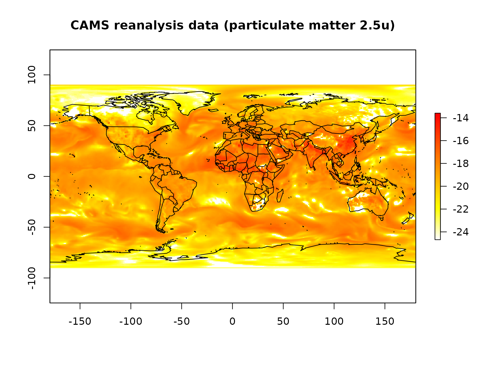

Downloading Data Sets from Copernicus’s Atmosphere Data Store
Copernicus.eu provides a set of interesting data sets for research, education, and applied earth sciences on their Atmospheric Data Store (ADS) as part of the Copernicus Atmospheric Monitoring Service (CAMS). These data provide consistent information on the atmosphere anywhere in the world.
Before Downloading Data
Before you will be able to download any data you need to get a free personal account.
To retrieve data ecmwfr use wf_set_key()to
add the login details to your local keyring (requires the R
package keyring).
Once you are in possession of your personal user (namely your user ID
and a secret key) ecmwfr allows to send requests to CDS
and/or download the data.
The Request Syntax
ADS data retrievals are based on a list object which
specifies the data set to be downloaded. These definitions are called
requests (for those who are familiar with mars:
these are basically mars requests). A request
defined the type of the dataset, the variables
to be downloaded, the time period, output format,
target location, a custom area extent, and
other details.
The request syntax is available for a range of different CDS data sets. Check the ADS Dataset website to see a list of available datasets and to check whether API requests are allowed or not (go to Download Data, select some data, show request by clicking Show API Request (red button, bottom of page).
The conversion from a python based string to the list format can be automated if you use the RStudio based Addin. By selecting and using Addin -> python to list (or ‘Mars to list’) you dynamically convert queries copied from either ECMWF or CDS based services.

A CAMS example
# Specify the data set
request <- list(
date = "2003-01-01/2003-01-01",
format = "netcdf",
variable = "particulate_matter_2.5um",
time = "00:00",
dataset_short_name = "cams-global-reanalysis-eac4",
target = "particulate_matter.nc"
)This request downloads global re-analysis data on particulate matter on January first 2003.
The data set as specified above can be downloaded calling the
wf_request function:
# Start downloading the data, the path of the file
# will be returned as a variable (ncfile)
file <- wf_request(user = "2345", # user ID (for authentification)
request = request, # the request
transfer = TRUE, # download the file
path = ".") # store data in current working directoryDepending on the request (the amount of data you are asking for) the request function may take a while! Please note: if you try to download larger amounts of data it is suggested to split the data sets, e.g., download year-by-year, or even month-by-month, if you are trying to download several variables/fields.
Once the retrieval has finished you should now be the owner of a
NetCDF containing the requested information located in the current
working directory, called particulate_matter.nc.
Quick check:
# Open NetCDF file and plot
# the log transformed data
r <- raster::raster(ncfile)
raster::plot(log(rotate(r)),
main = "CAMS reanalysis data (particulate matter 2.5u)",
col = rev(heat.colors(100)))
maps::map("world", add = TRUE)